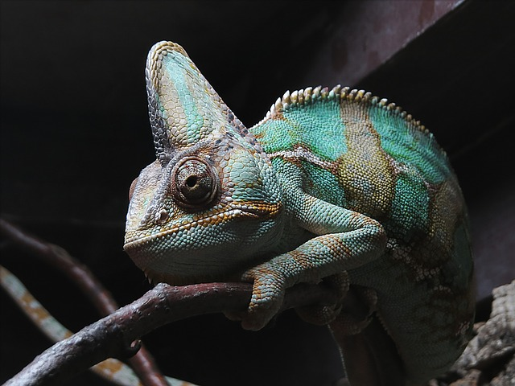

Chameleon
They use their ability to change their skin pigmentation as a form of camouflage and communication.
- Scientific Name: Chamaeleonidae
- Average Length: up to 2 feet
- Average Lifespan: 2 to 7 years
- Habitat: Forests and deserts.
Chameleons come in a number of shapes, sizes, and colors. They have crests or horns on the backs of their skulls, long, sticky tongues, and uniquely-shaped feet. Many chameleon species also have a prehensile tail, which can be wrapped around branches to aid them in climbing. The scales of many species can change color to green, gray, yellow, red, purple, blue, and more.